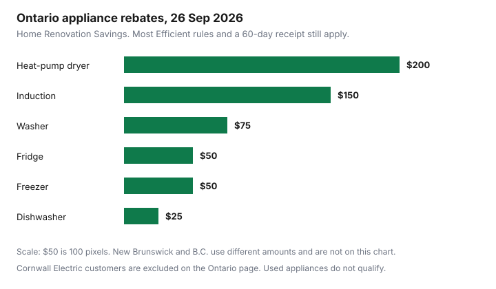

Household Items and Supplies · Canada
Appliance Rebates in Canada (2026): Province-by-Province Guide to Fridge, Washer, and Dryer Rebates
An appliance rebate is a published amount, on a named program, for a model that is on that program’s list, claimed the way that page describes. It is not a rumour that “the province pays $200 for fridges.” Amounts below were read on 26 September 2026. Programs change. Re-open the page before you buy. This guide is purchase rebates on appliances. Heat-pump rebates for home heating are the heat-pump rebate guide. Electricity math for a dryer is the dryer energy guide.
Key takeaways
- Ontario Home Renovation Savings, read 26 Sep 2026: heat-pump dryer $200, washer $75, induction cooktop or range $150, fridge $50, freezer $50, dishwasher $25, for eligible ENERGY STAR Most Efficient models. Apply within 60 days. Used appliances do not qualify.
- SaveEnergyNB in-store annual rebates run to 31 Mar 2027 on that page: washer $35, dryer $40, heat-pump dryer $150, with efficiency tests that are not Ontario’s tests.
- B.C. Hydro’s fall 2025 fridge and laundry offer ended its purchase period on 2 Jan 2026. The spring–summer 2026 instant discounts ended 21 Aug 2026 and did not list fridges or laundry machines.
- No other provincial appliance program was verified for this draft. “Check your utility” means open that utility’s page, not a copied dollar figure.
- Confirm the model on Natural Resources Canada’s searchable product list before you treat a standard ENERGY STAR label as Most Efficient.
How appliance rebates work in Canada: utility vs provincial vs retailer instant rebates
Three cheques get mixed up at the till. A provincial or program rebate, such as Ontario’s Home Renovation Savings appliance offer, is claimed from the program, often after you pay the retailer. A utility instant rebate, such as SaveEnergyNB’s in-store discount or B.C. Hydro’s seasonal instant discount, comes off at a participating retailer’s register and only for models that utility listed. A retailer “instant rebate” in a flyer can be the store’s own promotion, a manufacturer’s coupon, or the utility’s money wearing the store’s logo. Read who funds it. If the only name on the tag is the store, it is a sale price, and the sale-price guides are the calendar and the price-adjustment window.
The pattern that survives a program change is the same. Identify the funder. Match the model to a qualified list, not to a similar machine. Note whether you must already be replacing an electric appliance, as Ontario requires. Note the purchase window and the claim deadline separately. A window that ended in January does not become a September rebate because a blog still ranks it.
Ontario Home Renovation Savings appliance rebates: amounts, Most Efficient rule, 60-day window
The Home Renovation Savings appliance page, read 26 September 2026, offers rebates on eligible ENERGY STAR Most Efficient appliances. The amounts printed on that page are $200 for a heat-pump clothes dryer, $75 for a washing machine, $150 for induction cooktops and ranges, $25 for a dishwasher, $50 for a fridge, and $50 for a freezer. The page says Most Efficient marks products that go above and beyond standard ENERGY STAR requirements. A machine that is only ENERGY STAR, or that is not on the qualified list the page points to, is not given these amounts by this guide.
To qualify, the page says you must be a residential customer connected to the Ontario electricity grid, be replacing an existing electric appliance, buy a new eligible appliance, and submit the application within 60 days of purchase. Used or refurbished appliances do not qualify. Cornwall Electric customers are excluded because they are connected to the Hydro-Québec grid. You may buy from any retailer, online or in store, then upload the receipt within 60 days. The page says to install the new appliance and recycle the old one. An Ontario news-release URL in the research list returned only a newsroom shell when opened for this draft, so the dollars here are from the program page, not from that release.

New Brunswick, BC, and other provinces: what's live in 2026 and what ended
SaveEnergyNB’s in-store page, read 26 September 2026, takes the discount at the register. No coupon or mail-in is described. Annual in-store rebates are marked available until 31 March 2027. On that table, an ENERGY STAR clothes washer that meets “Most Efficient 2022” criteria and has a volume greater than 2.5 cubic feet is $35 off. An ENERGY STAR dryer that uses less than 100 kWh per cubic foot is $40 off. A combination unit that meets both tests is $60 off. An ENERGY STAR heat-pump dryer that uses 100 kWh per cubic foot of drum capacity per year or less is $150 off. The maximum is 5 items per transaction. Participating banners on that page include Best Buy, Canadian Tire, Costco, Home Depot, and others, some of them “select locations.” These dollars are not Ontario’s dollars. Do not carry $200 into a New Brunswick aisle.
B.C. Hydro’s fact sheet “Rebates on Energy Star appliances (October 3, 2025 to January 2, 2026)” listed instant discounts on select ENERGY STAR laundry machines and refrigerators: $100 on select combination units with CEF at least 4.3, $50 on select washers, $75 or $150 on select dryers depending on CEF, and $75 on select refrigerators. The fall 2025 terms set the appliance purchase period from 12:00 a.m. PDT on 3 October 2025 to 11:59 p.m. PDT on 2 January 2026, and said purchases outside that period would not qualify. A refrigerator qualifying-list note said post-purchase applications closed 3 March 2026. That offer is over.
The spring 2026 retail terms, read 26 September 2026, set a purchase period from 12:00 a.m. PDT on 1 May 2026 to 11:59 p.m. PDT on 21 August 2026. The eligible products in that PDF are window and portable room air conditioners at $50, room air purifiers at $30, and WaterSense showerheads at $10, at named participating retailers, as instant discounts. Fridges, washers, and dryers are not in that offer. By 26 September 2026 the May-to-August window had closed. B.C. Hydro says it can change or end an offer without notice. Before a B.C. purchase, open bchydro.com/deals and read the current terms. Do not use the fall 2025 fridge amount.
For every other province and territory, this draft did not verify a live fridge, washer, or dryer rebate. The honest cell is “check your utility,” on that utility’s own page, the same way the three programs above were opened. Manitoba Hydro, SaskPower, Hydro-Québec, Nova Scotia Power, and the rest are names to search. They are not amounts. If a page does not list the appliance, there is no rebate to put in the table.
ENERGY STAR vs Most Efficient: checking the qualified-product list before you buy
ENERGY STAR and ENERGY STAR Most Efficient are not synonyms. Ontario’s page uses Most Efficient as the bar for the amounts in the chart. New Brunswick’s washer row on the page read 26 September 2026 still says “Most Efficient 2022,” plus a volume test, which is a different line from Ontario’s current Most Efficient wording. Matching the wrong year’s phrase is how a receipt gets refused.
Natural Resources Canada’s searchable product list, at the NRCan list opened for this draft, separates “ENERGY STAR” from “ENERGY STAR Most Efficient 2025” for clothes washers, clothes dryers, dishwashers, freezers, and refrigerators. The page says the ENERGY STAR name in Canada is administered by Natural Resources Canada. Look up the model number in the list that matches the program’s words before you pay. The EnerGuide label, which is about annual energy use, is the label guide. A rebate does not answer which of two qualified models uses fewer kilowatt-hours. Cold-water washing, which cuts use after the machine is home, is the laundry energy guide.
Stack rebates with sale prices and price adjustment
A sale price is the number on the receipt. Ontario’s steps are to buy, then upload that receipt within 60 days. The program page does not say the rebate shrinks because you also used a flyer, and it does not say a flyer disqualifies you. It also does not discuss a later price adjustment. A price adjustment is the retailer returning a difference, on the rules in the adjustment guide. If that refund changes what you paid, ask Home Renovation Savings or the utility whether the rebate stays, changes, or must be re-filed. This draft will not invent a stacking rule the pages do not print.
New Brunswick’s instant discount is taken at the till on an eligible unit. You cannot also mail the same unit to Ontario’s program. You live where you live, on the grid that page names. One appliance, one program, unless a page you have opened says otherwise. None opened for this draft said otherwise.
Province table + checklist; re-verify every amount at draft
| Province | Program | Appliances | Amount | Claim |
|---|---|---|---|---|
| Ontario | Home Renovation Savings | Heat-pump dryer; washer; induction; fridge; freezer; dishwasher. ENERGY STAR Most Efficient. New. Replacing electric. | $200; $75; $150; $50; $50; $25 | Upload the receipt within 60 days. Cornwall Electric excluded |
| New Brunswick | SaveEnergyNB in-store, annual | Washer; dryer; combination; heat-pump dryer. Tests differ from Ontario | $35; $40; $60; $150 | Instant at participating stores, to 31 Mar 2027. Max 5 items per transaction |
| British Columbia | B.C. Hydro fall 2025 appliances | Select ENERGY STAR laundry and fridges | Washer $50; dryer $75 or $150; combo $100; fridge $75 | Purchase period ended 2 Jan 2026. Not a current offer |
| British Columbia | B.C. Hydro spring–summer 2026 | Window or portable AC; air purifier; showerhead. Not fridges or laundry | $50; $30; $10 | Purchase period ended 21 Aug 2026 |
| Other provinces | Your electric utility’s own page | Only what that page lists | Not verified in this draft | Do not copy Ontario or New Brunswick amounts |
Checklist before you pay: program page open, model on the qualified list, purchase window includes today, you are an eligible customer, the old appliance meets the replacement rule, and you know whether the discount is instant or a 60-day upload. If any line is a blank, you do not have a rebate yet. You have a full price.
Sources & date stamps
- Home Renovation Savings appliance page, read 26 Sep 2026: $200, $75, $150, $25, $50, $50; ENERGY STAR Most Efficient; 60 days; new appliances; existing electric appliance; Ontario grid; Cornwall Electric excluded.
- SaveEnergyNB in-store rebates, read 26 Sep 2026: annual offers until 31 Mar 2027; washer $35; dryer $40; combination $60; heat-pump dryer $150; instant; maximum 5 items per transaction.
- B.C. Hydro fact sheet, appliances 3 Oct 2025 to 2 Jan 2026, and fall 2025 retail terms: purchase deadline 11:59 p.m. PDT 2 Jan 2026; amounts $50, $75, $150, $100, $75 as cited. Refrigerator post-purchase note: applications closed 3 Mar 2026.
- B.C. Hydro spring 2026 retail program terms, read 26 Sep 2026: 1 May 2026 to 21 Aug 2026; AC $50; air purifier $30; showerhead $10. No fridge or laundry rebate in that PDF.
- Natural Resources Canada searchable product list, opened 26 Sep 2026: separate ENERGY STAR and ENERGY STAR Most Efficient 2025 rows for washers, dryers, dishwashers, fridges, and freezers.
Frequently asked questions
Can I get a rebate on a new fridge or washer in my province?
Only if a program you can open on an official page lists that appliance, that efficiency tier, and a purchase window that includes your receipt. On 26 Sep 2026, Ontario's Home Renovation Savings page listed a fridge at $50 and a washer at $75 for eligible ENERGY STAR Most Efficient models. New Brunswick's in-store page listed different amounts. No other province's fridge rebate was verified for this draft.
What is ENERGY STAR Most Efficient and why does it matter for rebates?
It is a narrower list than ENERGY STAR. Ontario's appliance page says Most Efficient products go beyond standard ENERGY STAR requirements, and it ties the rebates to that designation. Natural Resources Canada's searchable product list has separate rows for ENERGY STAR and for ENERGY STAR Most Efficient 2025. A standard ENERGY STAR sticker is not automatically the Ontario rebate.
Do I apply before or after I buy?
Ontario's page says buy first, from any retailer, then upload the receipt within 60 days. New Brunswick's in-store rebates are taken at the register, with no mail-in form described on that page. B.C. Hydro's spring 2026 terms also described instant discounts at participating retailers, inside a purchase window that ended 21 Aug 2026.
Can I combine a rebate with a sale price or price adjustment?
The sale price is whatever the receipt shows, and the Ontario application uses that receipt. A later price adjustment is a separate retailer refund. None of the program pages opened for this draft explain whether a refund changes the rebate. Ask the program before you assume the amounts stack or that the rebate is recalculated.
Did B.C. end its appliance rebates?
The fall 2025 fridge, washer, and dryer offer had a purchase period that ended 2 Jan 2026, on B.C. Hydro's fact sheet and terms. The spring-summer 2026 instant discounts ran from 1 May to 21 Aug 2026 and covered eligible air conditioners, air purifiers, and showerheads, not fridges or laundry machines. That window had closed by 26 Sep 2026. Check bchydro.com/deals before you buy.